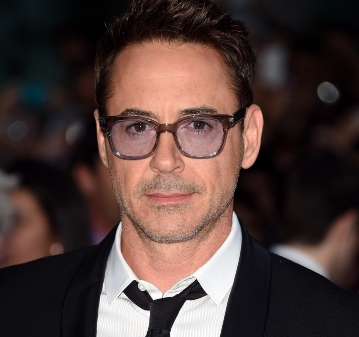
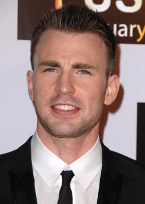
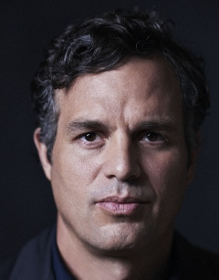
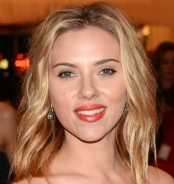
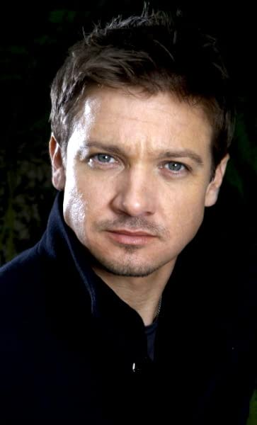

You Chose Iron Man

Iron Man/Tony Stark is played by Robert Downey Jr. First appeared as Iron Man in 2008, and kicked off this Marvel craze we currently live in.
Robert is a long time actor and my favorite movie of his is Kiss Kiss Bang Bang.
He was born in 1965.
You Chose Captain America

Captain America is played by Chris Evans. First appeared as Captain America in 2011, and is unlikely to return to future films as the character.
He was born in 1981 and my favorite movie of his is Knives Out.
You Chose Thor

Thor is played by Chris Hemsworth. First appeared as Thor in 2011, and is returning to the role of Thor in a new film due out in 2022.
He was born in 1983 and is Australian and my favorite movie of his is Thor: Ragnarok.
You Chose Hulk

Hulk is played by Mark Ruffalo. First appeared as Hulk in 2012, after taking over for Ed Norton.
He was born in 1967 my favorite movie of his is Spotlight.
You Chose Black Widow

Black Widow is played by Scarlett Johansson first appeared as Black Widow in 2010
She was born in 1984 my favorite movie of her's is Match Point.
You Chose Hawkeye

Hawkeye is played by Jemery Renner first appeared as Hawkeye in 2010
He was born in 1971 my favorite movie of his is The Town.
Sorry!
Your choice did not match our database. Please review the spelling, also note that only the "orginial avengers" that were shown
in the first movie are available at this time. Also note that the characters real names are not accepted example use Iron Man instead
of Tony Stark